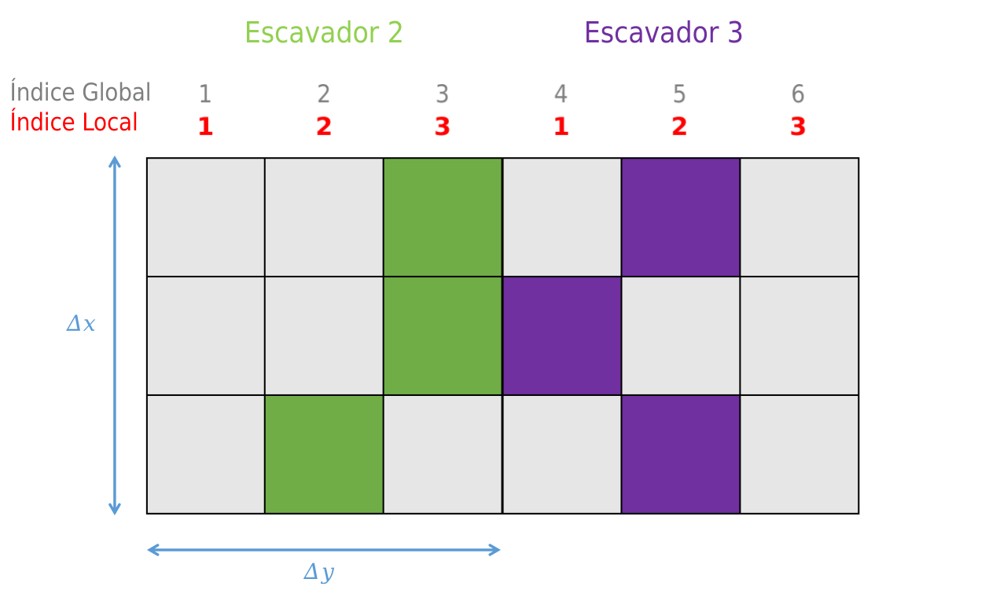

Uma semana depois do incidente com o terreno rochoso, Jessie, até então chefe de Daisy, é demitida, pois ela foi denunciada na Organização Internacional do Trabalho (OIT) devido aos seus abusos no ambiente de trabalho. Afinal de contas, não é porque um suricate trabalha com escavação que ele precisa ser sobrecarregado de tarefas.
Como resultado, um novo chefe foi apresentado, Fuli, um gerente com anos de experiência em escavação de todos os tipos. Fuli pretende garantir uma distribuição igual de tarefas entre os suricates. Ele deseja implementar uma nova regra pela qual cada suricate só pode acessar seu próprio local de escavação, aumentando assim o foco no trabalho.
16.1 Novos índices
Fuli também tem experiência com programação, e informa Daisy que seus códigos apesar de bem intencionados, nunca funcionariam na linha de produção, pois SharedArrays.jl é uma solução para emular processos distribuidos, mas exige que os dados sejam compartilhados, ou seja, suas matrizes precisam estar no mesmo computador.
Caso Daisy queira rodar seus códigos em paralelo de verdade, ela precisa usar o pacote DistributedArrays.jl. Esse pacote facilita a distribuição dos indices de cada trabalhador, mas precisa de um pouco de atenção para acessar os dados corretamente.

Daisy ficou confusa, mas Fuli lhe deu alguns exemplos básicos. Fuli explica que é necessário criar variáveis distribuidas, do mesmo jeito que Daisy criou uma matriz preenchida com zeros, usando a função zeros, o pacote DistributedArrays.jl disponibiliza alguns comandos semelhantes, mas com um d adicional, tal como dzeros, dones.
usingDistributedaddprocs(2)@everywhereusingDistributedArraysexemplo =dzeros(Int64, 3, 6)@everywherefunctionver_indices_globais(exemplo) Δx, Δy = DistributedArrays.localindices(exemplo)println("índices Globais: Δx = $(Δx), Δy = $(Δy)")endfor w inworkers()@spawnat w ver_indices_globais(exemplo)endsleep(1) # para dar tempo da mensagem aparecer
Uma vez que Daisy conhece os índices globais, os índices locais são iguais aos comprimento de cada intervalo. Fuli alerta Daisy, para escrever em matrizes distribuidas, só podem ser utilizados indices locais, e além disso, com uma palavra chave especial, localpart, então Daisy deveria ter cuidado, e não confundir o parte_local que ela já havia criado anteriormente - talvez uma mudança de nome de variáveis seriam bem vindas, Daisy precisaria falar com seu mestre.
@everywherefunctionescrever_indice_local!(exemplo) Δx, Δy = DistributedArrays.localindices(exemplo) indice_local_x =1:length(Δx) indice_local_y =1:length(Δy)for x in indice_local_x, y in indice_local_ylocalpart(exemplo)[x, y] =myid()endendexemplo =dzeros(Int64, 3, 6)for w inworkers()@spawnat w escrever_indice_local!(exemplo)enddisplay(exemplo);rmprocs()
Daisy fez muitos erros, mas finalmente conseguiu, ela adpatou seu código antigo para utilizar o pacote DistributedArrays.jl. Depois de tantos bugs, Daisy chegou a conclusão que é melhor fazer tratamentos de erro, já que quando bugs acontecem em processos remotos, eles não são redirecionados ao processo central, logo, não existem mensagens de erro na tela.
Sintaxe: try
Um bloco try-catch funciona como esperado de outras linguagens de programação, sua utilização básica consiste em apenas colocar o seu código dentro do bloco try.
trysqrt(-1)catchprintln("Não é possível fazer sqrt(-1)")println("Tente sqrt(Complex(-1))")end
Não é possível fazer sqrt(-1)
Tente sqrt(Complex(-1))
usingDistributedaddprocs(3)@everywhereusingDistributedArrays@everywherefunctiond_escavar_tunel!(terreno) try Δx, Δy = DistributedArrays.localindices(terreno) qtd_camadas =length(Δx) tamanho_região =length(Δy)# primeira linha é a linha do solo ponto_partida =rand(1:tamanho_região)# '1' == escavar a posição escavar =one(eltype(terreno))localpart(terreno)[1, ponto_partida] = escavarfor i in2:qtd_camadas ulitma_camada =localpart(terreno)[i-1, :]# garante que o código funcione para outros# tipos de matrizes, lém de matriz# com `true`/`false` ultima_posicao =findfirst( ulitma_camada .== escavar ) esquerda = ultima_posicao -1 meio = ultima_posicao direita = ultima_posicao +1if esquerda <1 possiveis_posições = [direita, meio]elseif direita > tamanho_região possiveis_posições = [meio, esquerda]else possiveis_posições = [esquerda, meio, direita]end aonde_escavar =rand(possiveis_posições)localpart(terreno)[i, aonde_escavar] = escavarend catchprintln("Aconteceu um Erro.")endreturnnothingend
A construção da matriz distribuída também requer um cuidado adicional, pois é possível controlar quais suricates vão participar da construção do túnel, e em quantas partes cada dimensão da matriz será particionada.
## Preciso passar uma tupla com as dimensões da matrizdimensões_terreno = (10, 6)## Um vetor com os processos que farão o trabalhoescavadores =workers()# Cada componente do vetor, corresponde a qtd# de particições em cada dimensão. Por exemplo# ['1', 2] = eixo 1 não tem divisão# [1, '3'] = eixo 2 é divido em 3 partesdivisões = [1, 3]# não tem função que cria matriz booleana,# então preciso usar a função `dfill`terreno =dfill(false, dimensões_terreno, escavadores, divisões)for w inworkers()@spawnat w d_escavar_tunel!(terreno)endusingSparseArrayssparse(terreno)rmprocs()